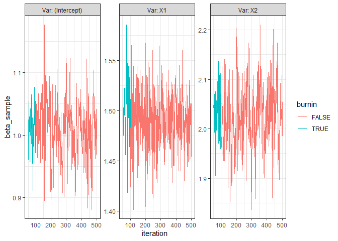

The mcmcglm package implements the CGGibbs sampler from the article Is Gibbs sampling faster than Hamiltonian Monte Carlo on GLMs?, which has linear run time as a function of number of parameters in a GLM model due to a clever “update” of the linear predictor. See more details at this section in a vignette
The package is implemented in a way that the user can specify any family of the response and any distribution for the prior of the parameter, where for a link function specified by the family. See more in vignette("pospkg").
Example
We first simulate some data from a linear model to use for showcasing the use of mcmcglm for a gaussian family.
n <- 1000
x1 <- rnorm (n)
x2 <- rbinom (n, 1, .5)
b0 <- 1
b1 <- 1.5
b2 <- 2
lin_pred <- b0+b1*x1+b2*x2
y_norm <- rnorm(n, mean = lin_pred, sd = 1)
dat_norm <- data.frame(Y = y_norm, X1 = x1, X2 = x2)The use of the function mcmcglm is then similar in interface to the glm function but with an added mandatory specification of
- the prior of the parameter
- a tuning parameter for the slice sampling procedure specified by the
qslice_funargument.- The default is the
qslice::slice_stepping_outfunction, which performs slice sampling as described in Neal 2003 for which a slice widthwneeds to be specified.
- The default is the
norm <- mcmcglm(formula = Y ~ .,
family = "gaussian",
data = dat_norm,
beta_prior = distributional::dist_normal(0, 1),
w = 0.5)This creates an mcmcglm object which prints as
norm
#> Object of class 'mcmcglm'
#>
#> Call: mcmcglm(formula = Y ~ ., family = "gaussian", data = dat_norm,
#> beta_prior = distributional::dist_normal(0, 1), w = 0.5)
#>
#> Average of parameter samples:
#> (Intercept) X1 X2
#> 1 1.011134 1.490459 2.026047summarising the call of the function with averages of the samples of each parameter in the GLM model.
Investigating results
The averages shown in the print method of the object can be retrieved with the generic coef like so:
coef(norm)
#> (Intercept) X1 X2
#> 1 1.011134 1.490459 2.026047The full data set of samples can be accessed with the samples function:
head(samples(norm))
#> (Intercept) X1 X2 iteration burnin
#> 1 0.6173367 -0.004541141 -0.09125636 0 TRUE
#> 2 2.6508146 0.281295470 0.68343132 1 TRUE
#> 3 0.8240996 0.324627659 2.30889073 2 TRUE
#> 4 0.8170086 1.028326905 2.20351455 3 TRUE
#> 5 0.8777350 1.592074284 2.16115289 4 TRUE
#> 6 0.9092187 1.442872350 2.02913214 5 TRUEA trace plot can be seen with the function trace_plot:
trace_plot(norm)